Herramientas gratuitas:
Keyword everywhere
Es una extensión gratuita para chrome, firefox, opera… Tan solo tienes que buscarla en google, “keywords everywhere chrome”, por ejemplo, instalarla y cada vez que realices una búsqueda te dará el volumen de búsqueda en un recuadro destacado que aparece a la derecha.
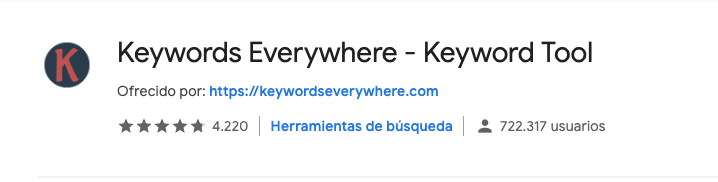
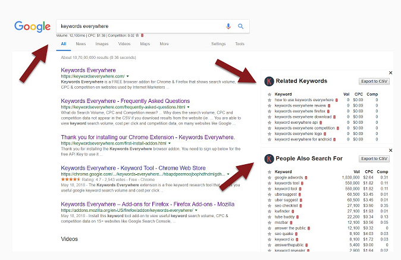
Tarea: añade todos los datos que obtienes en la pestaña de tu documento
Google suggest
Cuando escribes una palabra en el buscador, se despliega una ventana mostrándote sugerencias relacionadas. Si además tienes instalada la extensión keywords everywhere te dará el volumen de búsqueda en esa misma ventana.
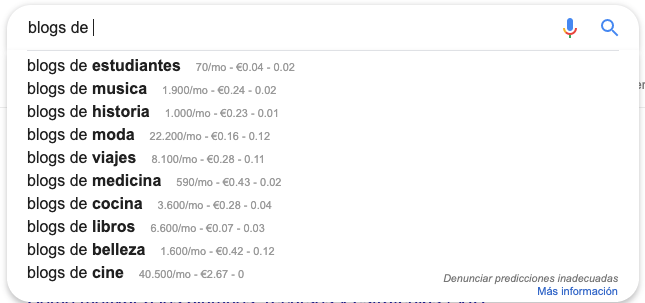
Para conseguir mayor número de sugerencias existe el truco de poner un prefijo o sufijo a la búsqueda con todas las letras del abecedario o utilizar la herramienta infinitesuggest que se basa en el mismo procedimiento.
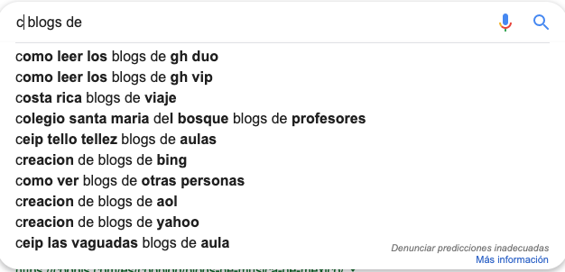
Tarea: añade todos los datos que obtienes en la pestaña de tu documento
Búsqueda relacionadas
Si hacemos scroll hasta el final de la página, google nos sigue dando sugerencias. Muestra palabras relacionadas con tu búsqueda, que son las más buscadas de su base de datos
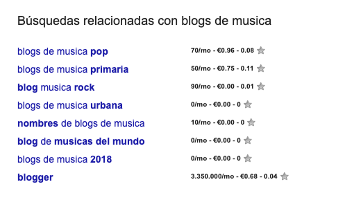
Tarea: añade todos los datos que obtienes en la pestaña de tu documento
Ubbersuggest
Es una herramienta muy completa , gratuita que te da una visión general de tu blog, ideas de palabras clave, analiza el tráfico que te llega en la actualidad, volumen de búsqueda, tendencia de búsqueda…
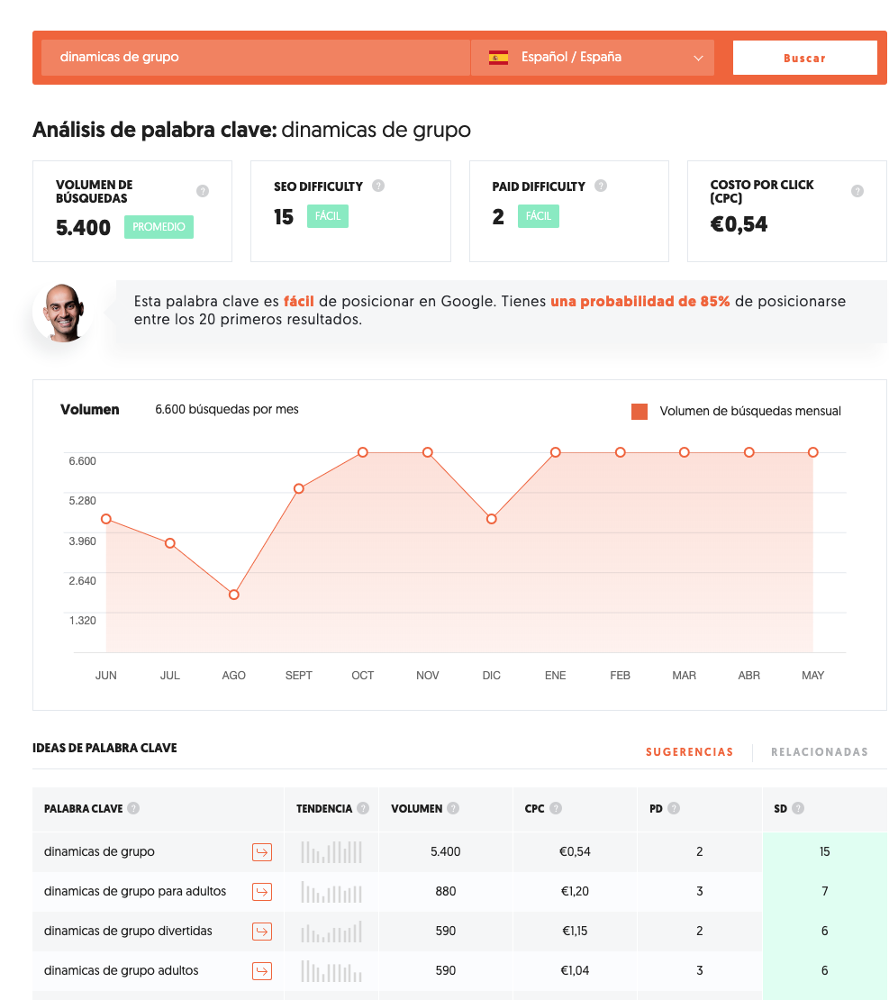
Tarea: añade todos los datos que obtienes en la pestaña de tu documento
Answerthepublic
Herramienta que arroja las preguntas más frecuentes en relación con un concepto o palabra clave.
Puedes elegir el idioma, escribir el concepto o palabra clave y dar a buscar. Te muestra los datos a modo de flor o de listados.
En esta herramienta no se muestran correctamente los volúmenes de búsqueda, pero sirve para guiarnos a la hora de estructurar la información y dar respuestas.
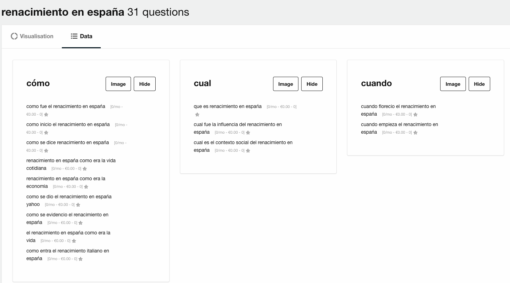
Tarea: añade todos los datos que obtienes en la pestaña de tu documento
Kiwosan
Con esta herramienta tienes un mes de prueba gratuito (el precio de la mensualidad es muy bajo). Te ofrece muchísimas sugerencias de palabras clave y preguntas relacionadas con la que tú le indicas. Digamos que mezcla los datos de sugerencias, búsquedas relacionadas y anwerthepublic. Todo en uno.
Para ver el volumen de búsqueda, puedes:
- descargar un archivo csv
- copiar las keywords en la columna de tu documento
- llevarte directamente las palabras sugeridas al keyword planner
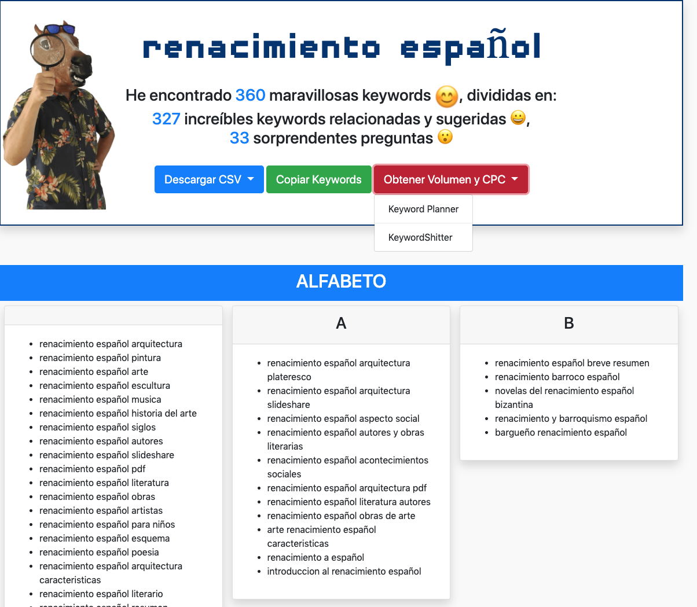
keywordtool.io
Esta herramienta te da el listado de palabras clave si bien para ver el volumen de búsqueda, competencia y tendencia hay que pagar. Pero existe un truco que te voy a desvelar en las próximas líneas.
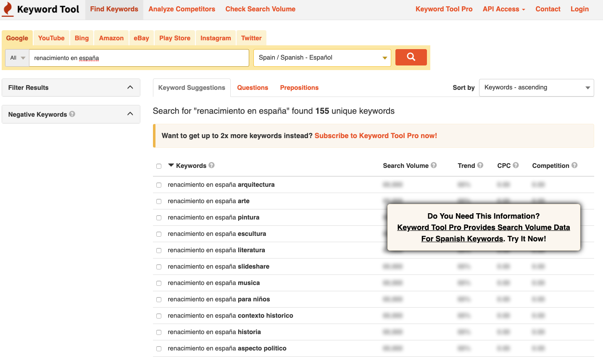
Tarea: añade todos los datos que obtienes en la pestaña de tu documento
Planificador de palabras clave: google adwords
El planificador de palabras clave o keyword planner es una herramienta de google adwords, la plataforma de anuncios de google, que permite encontrar palabras clave con volumen de búsqueda y competencia.
Para poder acceder al planificador de palabras clave es necesario que te des de alta en google adwords si aún no tienes cuenta.
Una vez que tengas creada tu cuenta, en la parte superior busca “herramientas y ajustes” -> planificación -> planificador de palabras clave
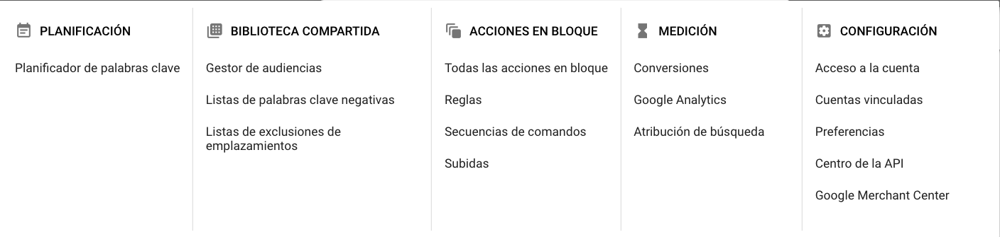
El planificador te permite o buscar palabras clave nuevas, a raíz de alguna idea dada, o consultar el volumen de búsqueda y las previsiones.
Elegimos esta segunda opción.
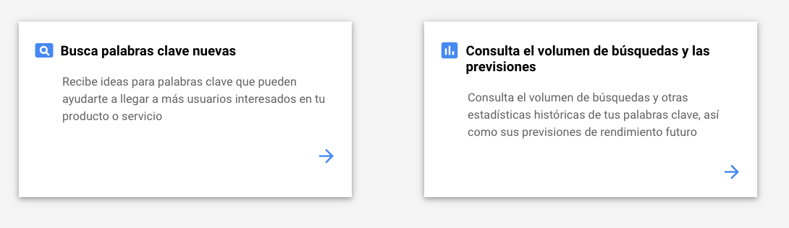
Si no te has saltado ninguna de las tareas mencionadas líneas más arriba, tendrás un documento con una columna “palabra clave” con varias palabras ya apuntadas.
Es hora de copiar esta columna (Ctrl + C) y copiarlas (Ctrl + V) en el planificador de palabras clave. Si lo prefieres también puedes subir el archivo
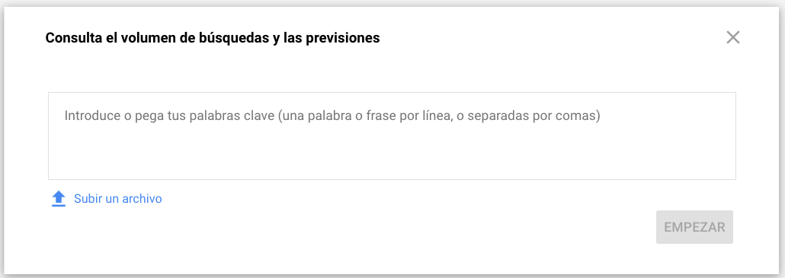
Como además tenemos la extensión de keywords everywhere instalada, nos dará datos más completos que si no la tuviéramos.
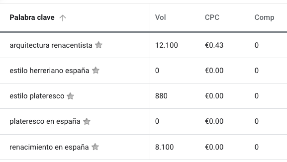
El CPC es el coste por clic. No hay que olvidar que estamos en la plataforma de anuncios de google y lo que nos indica esta columna es lo que cuesta cada clic de ese anuncio.
Como se ve, estos términos no tienen apenas competencia. Cuánto más alto sea el CPC, más competencia tendrá esa palabra clave.
Podéis seleccionar todas las palabras clave o aquellas que son de vuestro interés y exportarlo en un archivo CSV.
Tarea 1: ahora que tenemos todos los datos, es hora de hacer limpieza. Eliminamos palabras clave repetidas y en el caso de que no concuerden volúmenes de búsqueda o competencia, siempre tendrá prioridad los datos del planificador de palabras clave.
Tarea 2: vamos a ver la tendencia de búsqueda de los términos. Si hay varias palabras clave similares y no sabes cuál elegir, utiliza google trends. En el ejemplo me quedaría con “renacimiento en España”
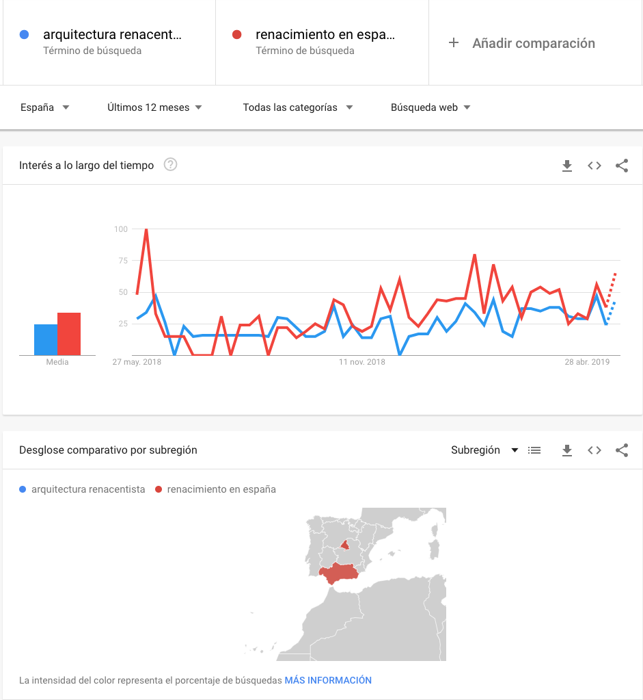
Ya tenemos nuestro documento totalmente cumplimentado y sabemos a qué palabra clave vamos a orientar nuestro próximo artículo.
¡Buen trabajo!
Extra
Puedes consultar mi vídeo o mi artículo sobre cómo buscar palabras clave para mayor información.
BLOG: https://www.rgalgora.com/buscar-palabras-clave/
Extra 2
Si quieres cacharrear con alguna herramienta de pago, puedes darte de alta y probar la versión gratuita de semrush, sistrix, keywordtool o ahrefs.
¡Seguimos disfrutando del camino!

Posicionamiento SEO por Rocío García Algora bajo licencia Creative Commons Reconocimiento-NoComercial-CompartirIgual 4.0 Internacional License.